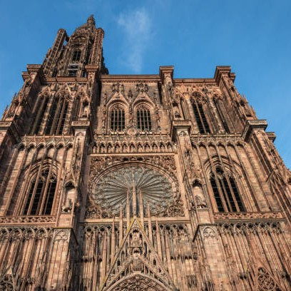
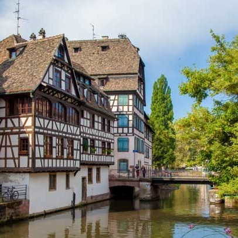
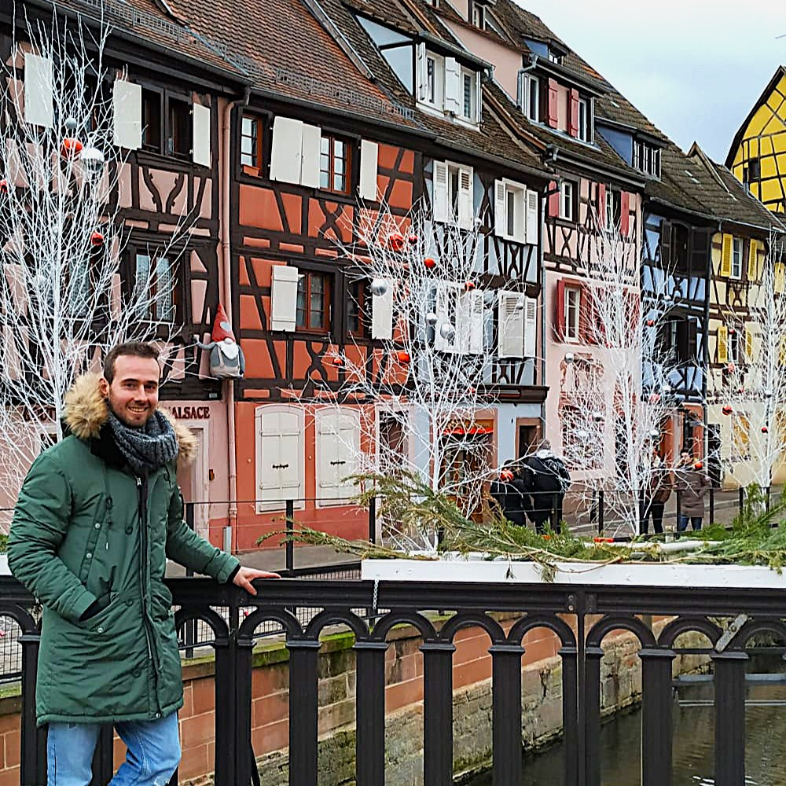
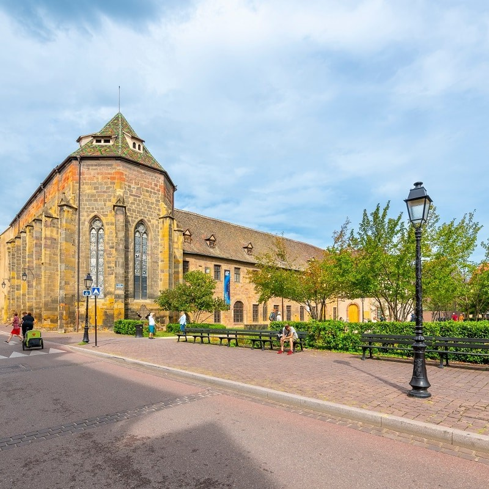
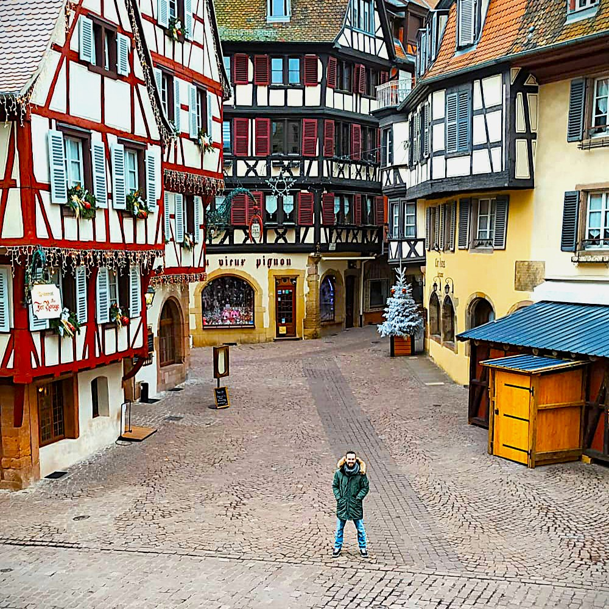
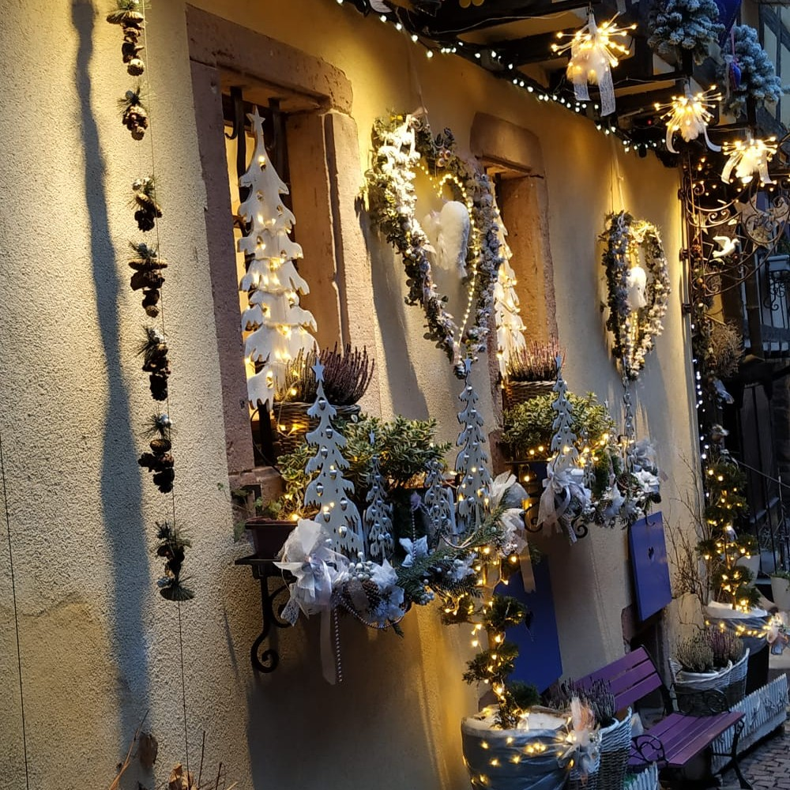
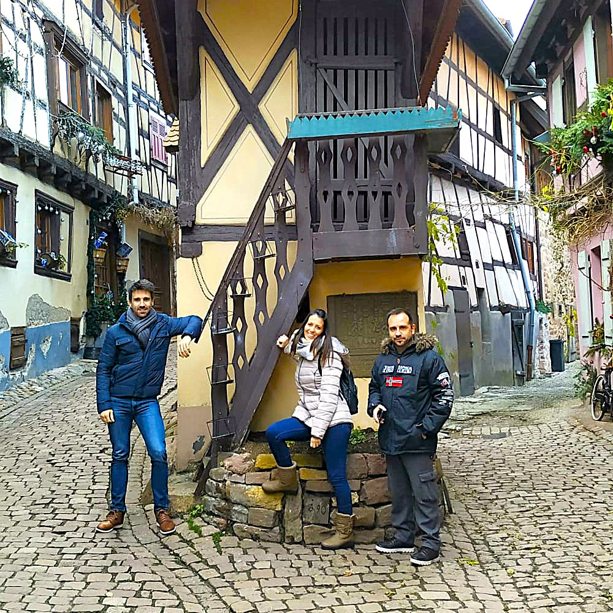
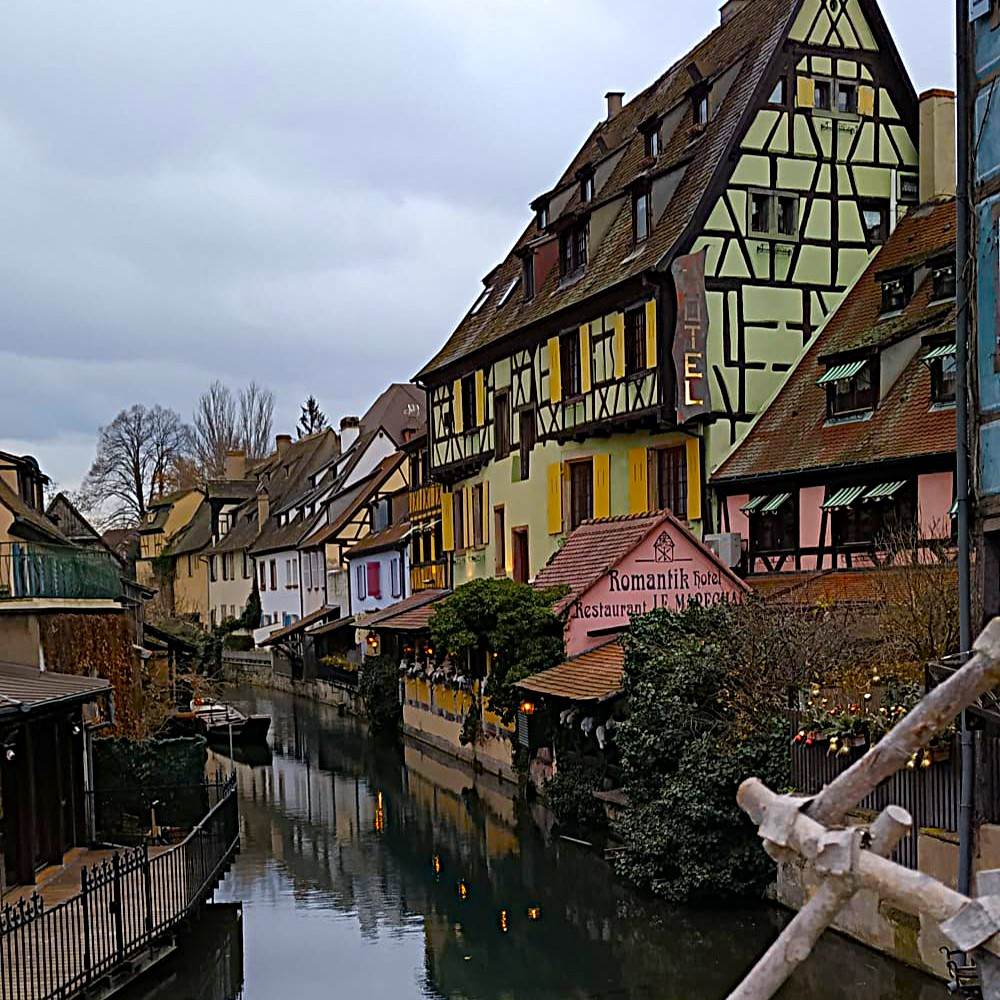
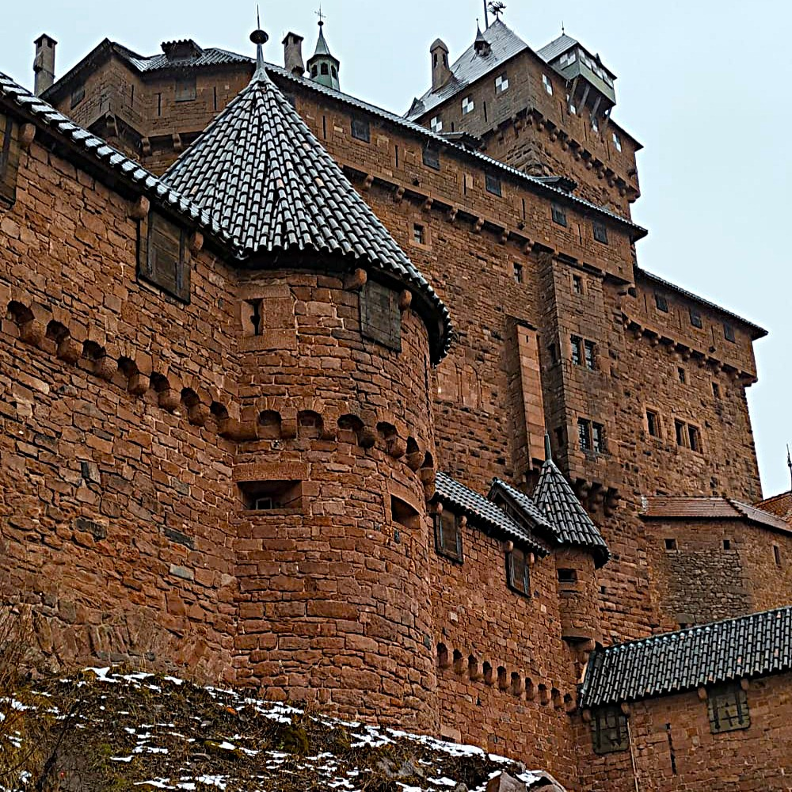

Pueblos de cuento, casas con entramado de madera y la Ruta del Vino
Alsacia es una de las regiones más encantadoras de Francia, situada en la frontera con Alemania y Suiza. Conocida por sus pueblos de ensueño de casas con entramado de madera (colombage), sus canales, sus viñedos interminables y su gastronomía única (chucrut, flammekueche, vinos blancos), Alsacia parece sacada de un cuento de hadas, especialmente en Navidad.
Esta guía de 7 días te llevará por los cinco pueblos imprescindibles de Alsacia: Estrasburgo (la capital europea, con su catedral gótica y el barrio de la Petite France), Colmar (la "pequeña Venecia" alsaciana), Riquewihr (el pueblo más bonito de Alsacia), Ribeauvillé (rodeado de viñedos y castillos) y Eguisheim (el pueblo circular, cuna de la viticultura alsaciana). La mejor forma de recorrer la región es alquilando un coche para disfrutar de la Ruta del Vino de Alsacia.
---Mi recomendación personal es alojarte en Colmar como base para explorar la Ruta del Vino. Colmar está en el centro de la región y tiene buenas conexiones. Si tienes coche (lo recomiendo), puedes visitar Riquewihr, Ribeauvillé y Eguisheim en excursiones de un día.
🚗 Coche en Alsacia: Es la mejor forma de recorrer los pueblos pequeños. Los aparcamientos en los pueblos son de pago (3-7€ por día). En temporada alta, llega temprano (antes de las 10am) para encontrar sitio.
🍷 Ruta del Vino de Alsacia: Tiene más de 170 km y atraviesa pueblos de cuento. No intentes verla toda en un día. Elige los pueblos que más te gusten (yo recomiendo Riquewihr, Ribeauvillé y Eguisheim en un día).
🎄 Navidad: Si vas en diciembre, reserva alojamiento con MUCHA antelación (6-8 meses). Los mercadillos de Estrasburgo y Colmar son los más famosos, pero los pueblos pequeños (Riquewihr, Eguisheim) son aún más mágicos.

La Catedral de Estrasburgo es uno de los máximos exponentes del gótico europeo. Su fachada de arenisca rosa es impresionante, y su reloj astronómico del siglo XVI es una obra maestra de la ingeniería. La aguja de la catedral mide 142 metros y fue el edificio más alto del mundo entre 1647 y 1874.
Se puede subir a la plataforma (332 escalones) para disfrutar de unas vistas espectaculares de la ciudad y de la Selva Negra al fondo. El reloj astronómico da un espectáculo de autómatas al mediodía (no te lo pierdas). La catedral es gratuita, pero la subida a la plataforma es de pago.

La Petite France es el barrio más famoso y fotografiado de Estrasburgo. Situado en una isla rodeada por el río Ill, es un laberinto de calles empedradas con casas de entramado de madera (colombage) de los siglos XVI y XVII. Los canales, los puentes y las terrazas lo convierten en un lugar de ensueño.
Antiguamente era el barrio de los pescadores, curtidores y molineros. Los nombres de las calles recuerdan ese pasado (rue des tanneurs, rue des moulins). El Puente Cubierto y las presas del Vauban ofrecen las mejores vistas del barrio.

La Petite Venise es el barrio más bonito de Colmar, una sucesión de canales bordeados de casas de colores con entramado de madera. Los jardineros usaban estos canales para transportar las verduras al mercado, de ahí el nombre "barrio de los jardineros". Es el rincón más fotogénico de la ciudad.
Se puede recorrer a pie el paseo del canal o tomar un paseo en barco (barcaza eléctrica) que dura unos 25 minutos y ofrece una perspectiva única. Las casas más famosas son la "Maison des Têtes" y la "Maison Pfister". El puente de la rue de Turenne es el punto más fotografiado.

El Museo Unterlinden es el museo más importante de Alsacia y uno de los más visitados de Francia. Está instalado en un antiguo convento dominico del siglo XIII. Su joya absoluta es el Retablo de Issenheim, una obra maestra del arte renacentista alemán pintada por Grünewald entre 1512 y 1516.
El retablo es impresionante: tiene dos series de paneles que se abren para mostrar diferentes escenas de la Pasión de Cristo y la vida de San Antonio. También alberga obras de Picasso, Monet, Renoir y arte contemporáneo. La arquitectura del museo (antiguo convento) es preciosa.

Riquewihr es, para muchos, el pueblo más bonito de Alsacia. Rodeado de murallas medievales y viñedos, su centro histórico está intacto desde el siglo XVI. Las calles empedradas, las casas de colores con entramado de madera, las fuentes y las tiendas de vinos lo convierten en un lugar de cuento.
El pueblo es pequeño y se recorre en una hora, pero merece la pena pasear sin prisas. La calle principal (rue du Général de Gaulle) es la más bonita, con casas como la "Maison des Vignerons" y la "Tour des Voleurs". Riquewihr es famoso por sus vinos (es la capital del Riesling). Hay muchas bodegas para hacer catas.

Ribeauvillé es un pueblo medieval rodeado por tres castillos en las colinas: el Château de Girsberg, el Château de Haut-Ribeaupierre y el Château de Saint-Ulrich. Desde el pueblo se pueden ver los tres, y se puede hacer una caminata hasta el más accesible (Saint-Ulrich) en unos 45 minutos.
El pueblo en sí es encantador, con murallas, torres y calles empedradas. Es famoso por ser la "capital de los trovadores" en la Edad Media. En septiembre se celebra la "Fête des Ménétriers" (fiesta de los músicos). Hay muchas bodegas familiares donde probar el vino local.

Eguisheim es famoso por su planta urbana circular y concéntrica, que se desarrolla alrededor del castillo del siglo XIII. Las calles forman anillos concéntricos, lo que lo hace único. Está rodeado de viñedos y es considerado la cuna de la viticultura alsaciana.
El pueblo tiene dos anillos principales: la Rue du Rempart Sud y la Rue du Rempart Nord, que son las más bonitas, llenas de casas de colores con flores en las ventanas. En el centro está el castillo de los condes de Eguisheim. Fue elegido "Pueblo Favorito de los Franceses" en 2013.

La Ruta del Vino de Alsacia tiene más de 170 km y atraviesa algunos de los pueblos más bonitos de Francia. Fue creada en 1953 y recorre las estribaciones de los Vosgos, pasando por viñedos, castillos y pueblos con entramado de madera. Las siete variedades de uva alsacianas (Riesling, Gewurztraminer, Pinot Gris, Muscat, Sylvaner, Pinot Blanc y Pinot Noir) se cultivan aquí.
Los pueblos imprescindibles (además de Colmar) son: Riquewihr, Ribeauvillé, Eguisheim, Kaysersberg, Bergheim y Obernai. La mejor forma de recorrerla es en coche, parando en bodegas para hacer catas. Muchas bodegas ofrecen catas gratuitas si compras alguna botella.

El Castillo del Haut-Kœnigsbourg es el castillo más famoso de Alsacia. Está situado a 757 metros de altitud, en la cima de una montaña, y se ve desde muchos kilómetros a la redonda. Fue reconstruido entre 1900 y 1908 por orden del emperador alemán Guillermo II, que lo quería como símbolo del poder germánico.
El castillo medieval original data del siglo XII. Desde sus murallas se obtienen unas vistas espectaculares de la llanura de Alsacia, la Selva Negra y, en días claros, los Alpes suizos. El interior está amueblado con piezas medievales y renacentistas. Es una visita imprescindible para los amantes de la historia.
Alsacia es una región para disfrutar con calma. No intentes ver todos los pueblos en un solo día. Dedica al menos 2 días a la Ruta del Vino: un día para Riquewihr y Ribeauvillé, y otro día para Eguisheim y Kaysersberg.
Riquewihr y Eguisheim son los pueblos más bonitos, pero también los más turísticos. Ve muy temprano (antes de las 10am) o al atardecer para disfrutarlos sin masificaciones. En temporada alta, el aparcamiento puede ser un problema.
El Castillo de Haut-Kœnigsbourg merece mucho la pena. Las vistas son espectaculares y el castillo está muy bien conservado. Combínalo con una visita a un pueblo cercano (Bergheim o Ribeauvillé).
La gastronomía alsaciana es contundente y deliciosa. No te vayas sin probar la flammekueche (tarta flambeada), el chucrut (choucroute) y el vino blanco (Riesling o Gewurztraminer).
{kind=link}
{kind=link}
{kind=link}
{kind=link}
{kind=link}
{kind=link}
{kind=link}
{kind=link}
{kind=link}
{kind=link}
{kind=link}
{kind=link}
{kind=link}
{kind=link}
{kind=link}